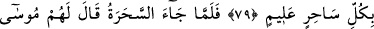

MUSA (A.S.) VE SİHİRBAZLAR
75. Sonra onların ardından Musa ve Harun’u mûcizelerimizle Fir’avn’a ve
adamlarına gönderdik, fakat onlar böbürlendiler. Zâten suç işleyen bir topluluk
idiler.”
76. Onlara katımızdan hak gelince: “Bu apaçık bir sihirdir.” dediler.
77. Musa: “Size gelen hak için böyle mi diyorsunuz? Bu sihir midir? Halbuki
sihirbazlar iflâh olmazlar.” dedi.
78. Dediler ki: “Sen bizi, babalarımızı üzerinde bulduğumuz şeyden çeviresin ve
yeryüzünde büyüklük yalnız ikinizin olsun diye mi bize geldin? Biz size inanacak
değiliz.”
79. Fir’avn: “Bütün bilgili sihirbazları bana getirin.” dedi.
80. Sihirbazlar gelince Mûsa onlara: “Atacağınızı atın.” dedi.
81. Onlar atınca Musa dedi ki: “Sizin yaptığınız sihirdir. Allah onu mutlaka boşa
çıkaracaktır. Çünkü Allah bozguncuların işini düzeltmez.”
82. “Ve suçlular istemese de Allah sözleriyle hakkı açığa çıkaracaktır.”
“Sonra onların ardından” yâni bütün bu peygamberlerin peşinden İmran oğlu “Musa
ve” Musa’nın kendisinden üç yaş büyük ağabeyi “Harun’u mûcizelerimizle” Bu
mûcizeler dokuz adet olup şunlardı: Asâ, bembeyaz el, tûfân, çekirge, haşerât, kurbağa,
kan, sûret değiştirme ve denizi yarma. Cenab-ı Hak, bütün bu mûcizelerin kulların güç
sınırını aştığına dikkat çekmek için bunları kendisine izâfe etmiştir. “Fir’avn’a ve